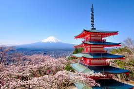

Exploring the world and sharing experiences one place at a time. I'm here to provide you with travel tips, beautiful photos, and stories form my adventures. Thank you for joining me!
Hi! I'm Alex, a travel enthusiast and photographer. I've been traveling around the globe for over a decade, capturing unique moments and inspiring others to embark on their own journeys.
If you're looking for travel inspiration, packing tips, or recommendations, yooe're in the right place. Follow along as I explore new destinations and revisit some old favorites.
i missed Japan's image.
The land of the rising sun offers a perfect blend of ancient tradition and modern innovation.
From the bustling streets of Tokyo to the tranquil temples of Kyoto, Japan has something for everyone.
Read more about my travels in Japan here.
Italy is a treasure trove of art, history, and delectable cuisine.
Whether it's the canals of Venice, the ruins of Rome, or the countryside of Tuscany, Italy's charm is undeniable.
Read more about my Italian adventures here.
Known for its breathtaking landscapes, New Zealand is a paradise for nature lovers. From the fjords of Milford Sound to the volcanic terrain of Tongariro, each view is a masterpiece.
Scenic landscape of New Zealand

Discover more about my time in New Zealand here.
If you have questions about my travels or would like to collaborate, feel free to reach out! Connect with me on social media or email directly at alex@example.com.
Thank you for visiting my blog! I hope it inspires your own adventures. Stay tuned for more updates and stories.